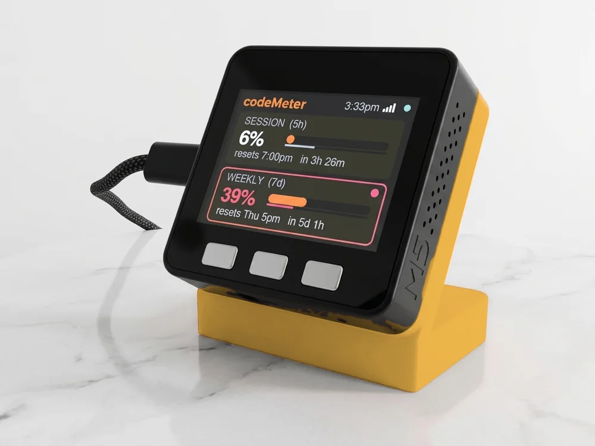

Crypto · Binance.US
Enjin Coin (ENJ) on your desk.
The live ENJ price and a candlestick chart on a small Wi-Fi display. Type ENJUSDT during setup.

Set it up
Type ENJUSDT.
One word, no slash: ENJ priced in USDT on Binance.US. No account, no app and no API key.
ENJUSDTGive it a short name, up to 8 letters, like ENJ.
- 1Plug it in
Join the SETUP PRICE TICKER Wi-Fi from your phone. The setup page opens.
- 2Type the ticker
Pick your home Wi-Fi, then type ENJUSDT in a ticker field and ENJ as its name.
- 3Watch it go
It joins your Wi-Fi and draws the chart. Press the left button for your next ticker.
On the screen
What ENJ looks like.
The chart above is live from Binance.US when your network can reach it. The device reads the same feed.
- Price on screen
- 0.023000 (recorded Nov 3, 2026)
- Across 24 hours
- -3.0% over 24 one-hour candles
- Chart high / low
- 0.027040 / 0.022920
- Decimals
- 6 on the price, high and low
- Binance.US volume
- #97 of 199 USDT pairs, 22 trades in 24 hours (Nov 3, 2026)
The last candle grows as trades happen: the device streams Binance.US's kline feed and redraws the whole chart every 30 seconds. The top line is the move across the chart; on 1h candles it reads :24h.
Candle sizes
From 1 minute to 1 month.
Press the right button, then left or right, to change how much ENJ history the 24 candles cover. It remembers your pick.
- 1m
- 3m
- 5m
- 15m
- 1h
- 4h
- 1d
- 1w
- 1M
1h is the default: 24 hours. 1m covers the last 24 minutes, 1d about three weeks, 1M two years.
Where it works
It needs Binance.US.
Prices come straight from Binance.US's public market data, so there is nothing to sign up for. Two limits, honestly:
- Some countries and networks block Binance.US. If this page shows "did not answer" under the screen, the device on the same network would be blocked too. Test first with the links on the setup page.
- Binance.US sometimes pauses or delists pairs. ENJUSDT was trading on Nov 3, 2026; if it stops, pick another pair in setup.
FAQ
Questions.
Can I see Enjin Coin price on a desk display?
Yes. priceMeter shows ENJUSDT live from Binance.US on a small Wi-Fi screen: the price, 24 candles and the move across them. Type ENJUSDT during setup.
Does it work when the market is closed?
Crypto has no closing bell: ENJ trades around the clock, so the chart keeps moving at night and on weekends. Stocks on the same device hold their last price after hours.
How fast does ENJ update?
Live. The device keeps a stream open to Binance.US, so the price and the last candle move within seconds of a trade, and the full chart reloads every 30 seconds.
Does it work outside the US?
Often, but not everywhere: Binance.US is blocked in some countries and on some networks. If this page can show the live chart, your network can reach it. Check the test links on our setup page first.
Can I show ENJ with other coins and stocks?
Yes, up to 25 in any mix. Press the left button for the next one, or left and right together to cycle every 15 seconds.